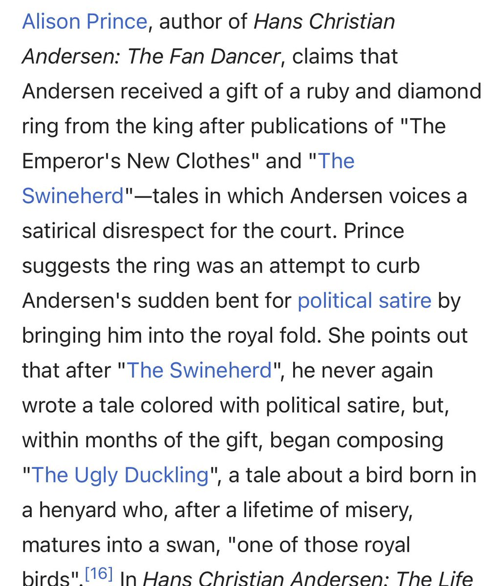

70. Straussian Taste Bureaucracies
June 5, 2021
In which I coin the idea of Straussian taste bureaucracies — institutional art worlds that certify emptiness as art to calibrate their own hegemonic power, like the Emperor's new clothes as a deliberate loyalty test — and argue for anarchic cultural production outside captured traditions.
Anything that needs a certificate of authenticity is a grift
I was mildly amused by the banana taped to a wall last year, but I’m no longer amused by that sort of stunt. This is the thing that sparked the thought. It’s a kind of cultural entropic dissolution. Salvatore Garau lo Sono invisible sculpture 18k usd sale | Hypebeast
I’m sure my art world friends have some sort of theory of how it’s a cutting insider satire about the whole art world being a money laundering con or whatever... but really? You can’t find a more interesting way to waste time and energy? This is a zombie’s idea of a joke.
It does take a certain ennervated blithe cleverness, though this one is particularly lazy. The quantum mumble-jumbo spiel that is the performance-PR-art component is not even interestingly silly physics.
You got a media buzz cycle going Mr. Garau. Yay for you. Fries with that?
You got a media buzz cycle going Mr. Garau. Yay for you. Fries with that?
There was a good essay I read a few years ago about the slow rot of “MFA program fiction” ... about how writers got so good at playing to conventions of the institutionalized literary orthodoxy they got unreadable. Feels like the art world needs a dose of that kind of reflection.
This kind of nihilism is the mark of a sort of Straussian bureaucracy of taste and resources. When artists are more talented at getting grants than at making art, you get this sort of thing. Happens in any field where ground truths are either absent or reducible to solipsism.
Regular Straussianism is overly respectful attitudes towards “great men” (or more precisely, their high priests).
Bureaucratic Straussian is overly respectful attitudes towards the institutionalized tastes. The best outcome is mannerism. The worst is this sort of thing.
Bureaucratic Straussian is overly respectful attitudes towards the institutionalized tastes. The best outcome is mannerism. The worst is this sort of thing.
Ultimately the only person who can keep you honest is you. If you’re moderately smart, it’s just too easy to get literate in the taste culture around an institution or powerful individual. You can’t help figuring out how to push buttons to make bank. The challenge is not to.
It’s even harder to resist temptation when not operating within a coercive taste culture with monopolistic ambitions attracts active hostility. If you happen to make it work without seeking (or worse, refusing) their approval, prepare for hell to rain down.
Hell hath no fury like a tastemaker scorned. And it’s insecurely attached ones at the margins who are the worst. The ones at the center/top tend to be cheerfully mercenary about being the masters of the grift and tend to be grudgingly respectful if you care enough to stay away.
I’m puzzled by this phenomenon. Seems like some taste cultures need to keep putting on reductio ad absurdum spectacles to self-calibrate. Whether it is this, or John Cage’s 4’43” or the real fashion show that inspired the Mugatu/Derelicte bit in Zoolander. readthegeneralist.com/briefing/lvmh-…
I mean pop culture/low art doesn’t need to do this. McDonald’s doesn’t sell a nothingburger in the form of a paper bag with an empty wrapper. Hollywood doesn’t try to sell you tickets to a 2 hour blank-screen movie. So why does high-art need nihilistic absurdity to calibrate?
I suspect it has no larger logic beyond simply pre-empting and co-opting criticism and arrogating to itself the sole right to judge itself.
“You normies cannot possibly criticize us more subtly and cleverly than we criticize ourselves. Now give us taxpayer money or your ancient civilization dies.”
It feels like a gated community HOA trying to con neighboring non-HOA blocks into thinking their regulations apply more broadly than they do and trying to enforce a tax. And they kinda get away with it.
A slightly more sympathetic reading is that institutions are tangent to the arc of history at the point of their founding. As reality twists and turns away from the tangent they turn into degenerate lower-dimensional spaces signifying nothing.
The emptiness is actual barrenness. It is relatively lifeless the way the middle of the Sahara is relatively lifeless compared to the Amazonian rainforest. Yeah, there’s some lizards and stuff, but basically it’s a bunch of mostly sand.
Talent hits the target others can’t hit
Genius hits the target others can’t see
Taste bureaucracy certifies the target you’re allowed to pay to aim at as Officially Good Targets™
It’s an attempt to establish rents by monopolizing some enforceable definition of True Art™
Genius hits the target others can’t see
Taste bureaucracy certifies the target you’re allowed to pay to aim at as Officially Good Targets™
It’s an attempt to establish rents by monopolizing some enforceable definition of True Art™
I like alt reading of the fable. Far from being a gullible fool, the emperor, like the child who calls him out, knows he has no clothes. He wants to see if either courtiers or public will dare call out his flagrant lie that he’s wearing invisible clothes. Trumpy loyalty test.
ROFL this is perfect. Hans Christian Anderson backstory...

The MFA program fiction thing I mentioned earlier in the thread. This but for any such field. Elif Batuman · Get a Real Degree
Note that critique has its own issues. It’s basically “MFAs should listen to literature PhDs.” It suggests that the ahistorical no-context “innocence” posture adopted by postwar pomo MFA writing should bend a knee to academic-literary history/theory. A cure as bad as the disease.
I think I’m a historicist-anarchist. Work in the context of a historical sensibility, but avoid being trapped by any tradition of history.
Anarchic historical sensibility > historical institutional tradition > ahistorical institutional tradition
Anarchic historical sensibility > historical institutional tradition > ahistorical institutional tradition
The “tradition” you situate your work in is simply the context created by everything you’ve chosen to consume, not things you were institutionally coerced to consume. Of course you can choose to borrow from traditions or entertain suggestions, but agency is yours.
Traditions make good servants but poor masters. They’re like librarians. A librarian might occasionally make a good suggestion on what to read, but their main job is to help you find things related to what you’ve decided to read.
If you let a tradition pwn you, producing vacuous works of satirical commentary with trollish “certificates of authenticity” is the least of your risks. The big risk is you’ll have no fun at all and wonder why the hell you’re going through motions larping artist or writer.
Institutionalized art is safe like 1980s IBM
Nobody ever got fired for buying IBM
Nobody ever got fired for writing MFA program fiction
Nobody ever got fired for making grant-art
Nobody ever got fired for writing Hugo/Nebula-intent sf
“Fired” in art = ostracized from a scene
Nobody ever got fired for buying IBM
Nobody ever got fired for writing MFA program fiction
Nobody ever got fired for making grant-art
Nobody ever got fired for writing Hugo/Nebula-intent sf
“Fired” in art = ostracized from a scene
The larger idea I’m criticizing is the unspoken claim than the only available contexts to situate anything you do are institutional traditions. That without the imprimatur of a tradition not only is your work suspect/poor/vanity (which is fine), but that it exists in a vacuum.
One reason I enjoy the wild internet as my context is that it’s actually richer than interior of any given tradition. If you don’t care about your access to traditions being officially sanctioned, you can access all the innards plus 10x stuff in the unincorporated interstices
Anarchic cultural production principles
Deregulate institutionalized cultural production
Disregard cultural production sumptuary laws
Don’t pay cultural rents
Hold tastemakers accountable
Ignore gatekeepers
Stop treating vacuity like meta-art
Publish online first
Deregulate institutionalized cultural production
Disregard cultural production sumptuary laws
Don’t pay cultural rents
Hold tastemakers accountable
Ignore gatekeepers
Stop treating vacuity like meta-art
Publish online first
And use comic sans if you want
What if... institutional art is screensavers for money? 🤔